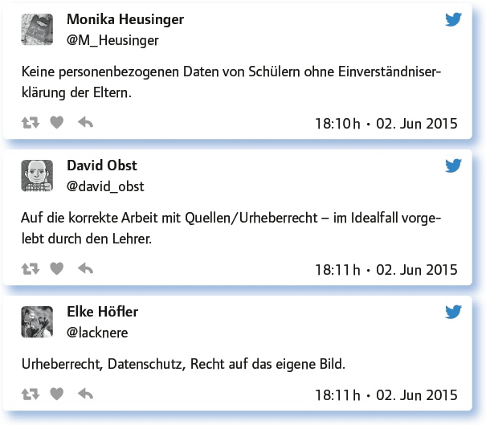
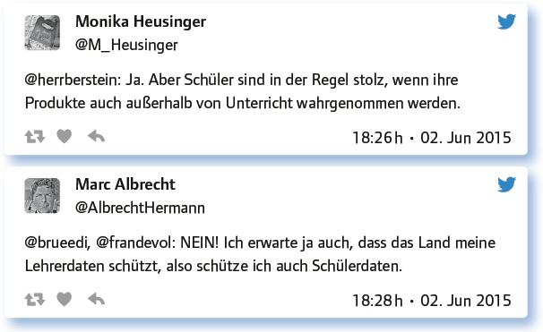
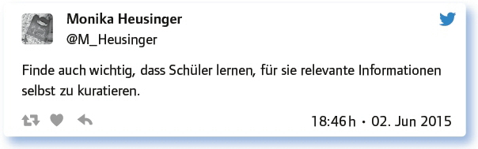

2.6
Kuratieren: Wie sammelt/publiziert man interessante Inhalte von Schülern für die Schule? (#EDchatDE vom 02. Juni 2015)
von Urs Henning
Der Begriff Kurator ist uns vertraut aus dem Kontext des Museums, für den Verantwortlichen einer Sammlung oder Ausstellung; das Verb kuratieren im Sinn von content curation hingegen ist noch jung und erst seit einiger Zeit im Journalismus gebräuchlich. Kuratieren hat im „Zeitalter des Informations-Overloads“ eine Filterfunktion: Experten suchen Informationen, überprüfen diese, wählen die wichtigsten aus, moderieren und publizieren diese Beiträge. Bernd Oswald sagt, dass wir zunehmend Instanzen brauchen, die Orientierung liefern, die eine Auswahl treffen aus bereits vorhandenen Werken anderer. Kuratierende Journalisten seien „die Trüffelschweine, die den guten Inhalt im Netz aufspüren“. Philippe Wampfler beschreibt seine Erfahrungen am Beispiel der Arbeit mit seiner Niuws-Box. Er liest Artikel, wählt sie nach bestimmten Kriterien aus, speichert sie, prüft sie erneut und gibt die wichtigsten mit einer kurzen Beschreibung für die Publikation frei.
Inhalte können auch automatisch kuratiert werden, mit Feeds oder Alerts oder mit Tools wie Paper.li oder Rebelmouse, dann spricht man von Aggregieren.
In diesem #EDchatDE wird der Begriff konventionell verwendet im Sinn von „für eine Veröffentlichung zusammenstellen“. Im Zentrum stehen Fragen wie: Was für Inhalte sollen Schulen freigeben, welche sind heikel? Worauf muss man beim Kuratieren von Schülerarbeiten achten? Welche Plattformen bieten sich dafür an, welche Werkzeuge sind hilfreich?
Kuratoren stellen Ausstellungen zusammen. Was hat eine Schule denn von sich oder den Schülern auszustellen?
Hier wurden unterschiedliche Möglichkeiten genannt:
Exponate, z. B. Modelle, die von den Schülern im Rahmen von Projekten geschaffen wurden.
Präsentationen. Projektarbeiten. Beides Pflicht gewesen. Besondere Leistungen (auch außerschulisch).
Eine Aufarbeitung der Schulgeschichte. – Namensgeber meiner jetzigen Schule hatte z. B. widersprüchliche Rolle während NS-Zeit.
Students’ works and info about school show how much students and teachers care about their work – showcase their creativity!
Schools need to curate a culture and climate that is genuine and „catchable“. Something to believe in.
Veranstaltungen wie Konzerte, Theater, Wettbewerbe, Auszeichungen (öffentl. Schulwebsite, Jahrbuch); interne SuS-Arbeiten auf Moodle.
Projektarbeiten und alles, was in der Schule gemacht wird und für interessant gehalten wird.
Ich erstelle mit meinen Studierenden heuer ein eBook mit Unterrichtsmaterialien. Alles unter OER.
Wenn man Schülerarbeiten kuratiert, worauf muss man (da) achten?
Die Teilgeber wiesen darauf hin, dass alles veröffentlicht werden kann, was dem Urheberrecht, dem Datenschutz und dem Schulleitbild entspricht. Schüler sind stolz und besonders motiviert, wenn sie kreativ für ein „echtes Publikum“ arbeiten dürfen. Beim Veröffentlichen von Schülerarbeiten muss man die Privatsphäre und den Datenschutz beachten und vorsichtig sein mit personenbezogenen Schülerdaten. Unter Umständen sollte sogar das Einverständnis der Eltern eingeholt werden.

Was sollte eine Schule nicht ausstellen/veröffentlichen?
Es wurde deutlich gemacht, dass man auf das Leitbild der Schule achten und nichts gegen den Willen der Schüler veröffentlichen sollte.
Alles, was Schule und Schulgemeinschaft schadet oder NICHTS bringt! Keine Schönfärbereien!
Alles, was die Aspekte der vorherigen Frage nicht berücksichtigt. :-)
You can’t (and mustn’t) publish works where the students don’t agree with publication – or which would damage their reputation.
Schulen sollten sich jedenfalls überlegen, was zum Leitbild der Schule gehört. #Digitale #Identität
Soziale Medien bieten sich für’s Zeigen von Arbeiten der Schüler/Schule an. Oder was spricht für eine eigene Plattform?
Die Teilgeber stellten dar, dass weniger Datenschutzprobleme für eine eigene Plattform wie etwa die Schulhomepage, für Mahara oder Moodle sprechen. Blogs sind geeignet für eine Reihe ähnlicher Arbeiten. Soziale Medien sind zwar schnell erreichbar und versprechen das große Publikum. Einmal veröffentlicht sind die Inhalte aber nur schwer wieder zu entfernen, denn der virtuelle Raum ist nur bedingt kontrollierbar.
Soziale Medien sind geeignet, wenn die Produkte auch für Außenstehende interessant sind.
Für soziale Medien spricht das schnell erreichbare, große Publikum. Einmal veröffentlicht sind die Inhalte allerdings schwer wieder zu entfernen.
If you have your own *reliable* school server, you can make sure that nothing is lost.
Das Problem der formalen Bildung (bzw. ihrer Ergebnisse) ist generell, dass sie eher nicht ausgestellt werden will.
Für eine eigene Plattform spricht, dass es keine Datenschutzprobleme gibt. Ich bevorzuge Mahara in Kombination mit Moodle.
Für eigene Plattform spricht die (vermeintlich) volle Kontrolle über die Daten.
Ich werde demnächst die eigene Plattform Mahara austesten. Die dortigen Funktionen können Facebook und Co. nicht leisten.
Die Lizenzen (v. a. Verwertung), die man an Social Media abtritt.
Formale Bildung wird häufig als intimer Prozess gelebt, der sich keiner Prüfung durch breite Öffentlichkeit unterziehen muss.
Der unkontrollierbare virtuelle Raum.
Siehe dazu auch den MOOC „Schule & Soziale Medien: für wen, wieso, wozu?“: http://t.co/FsR9iSvC1W
Antworte auf 3 Tweets unterschiedlicher Teilgeberinnen a) zustimmend, b) kritisch, c) provozierend!

Welche Werkzeuge machen das Kuratieren von Schülerarbeiten oder interessanten Schulinhalten leichter? Tipps. Links.
Bei der Wahl der Werkzeuge wurden z. B. Social Bookmarking Tools genannt, zum Sammeln und Teilen von Links und Google Drive oder OneDrive für die Zusammenarbeit, auch Scoop.it und Twitter. Online-Zeitungen mit Paper.li, Rebelmouse oder Flipboard lassen sich für das persönliche PLE, im Klassenverband oder für die Schule insgesamt einsetzen, z. B. als soziales Dashboard, zeitweise gezeigt über einen Screen.
Abgelegene Region: Lokale Ausstellungen bringen wenig Wirkung. Internet ist NOTWENDIG! Und gute Kontakte zur lokalen Presse!
Pearltrees ist ein Online-Dienst, mit dem man Links, Dateien, Fotos oder Videos kuratieren kann: http://t.co/oKjV9tjEey
Zum Beispiel eine Onlinepräsentation via @VideoScribeApp macht die Veröffentlichung anschaulich.
Für Dokumentation der Unterrichtsaktivitäten und Infos nutze ich Google Drive.
Not really a tool … but our school produces a yearbook which contains reproductions of artwork, photographs, reports …
Ein Blog eignet sich wahrscheinlich gut für eine Reihe von Arbeiten – leicht zu erstellen, kostengünstig, gut zu verwalten.
Blogs, Webseiten ebenso wie z. B. Pinterest oder Social Media, wenn z. B. Klassenaccount vorhanden.
Auch Online-Zeitungen mit Paper.li lassen sich für die Schule einsetzen: http://t.co/7AFeyOMk7s
Für Lehrer/innen jedenfalls Scoop.it & Twitter.
Ich habe gerade Padlet kennengelernt – eine schöne Möglichkeit, Dinge zu sammeln und zu zeigen, Scoop.it ist auch prima.
Flipboard erstellt Magazine, die man teilen kann.
Um Nachrichten aus der spanischsprachigen Welt für die Schüler zusammenzustellen, nutze ich paper.li.: https://t.co/vGbVC70GdG
Thinglink can be quite handy – here’s one that showcases our Comenius project (2011-13): https://t.co/8oUB9NMWKc
Aber: Ist aktive Schul-PR nicht übertrieben? Sollte man Schülerarbeiten nicht im geschützten Raum verborgen halten?
Es wurde betont, dass Schul-PR wichtig ist, aber nicht jede Aktivität veröffentlicht und auch keine Schönfärberei betrieben werden sollte.
Nicht verborgen halten, aber Schulmarketing darf nicht zur Schönfärberei werden!
Man kann aktive Schul-PR betreiben und sensiblere Kunstwerke im geschützten Rahmen der Schule „verbergen“. Das schließt sich nicht aus.
Schul-PR ermöglicht den Schülern, stolz zu sein auf ihre Schule, ihre Leistungen. – Wer würde sich das nicht wünschen?
Man sollte nicht jede Aktivität ausstellen. Auswahl geeigneter Produkte wird stärker wahrgenommen.
Ein soziales Dashboard für die eigene Schule fände ich spannend, z B. zeitweise gezeigt über den Screen in der Eingangshalle.
Im Zeichen zurückgehender SuS-Zahlen ist aktive Schul-PR nötiger denn je. Dabei Wichtiges von Unwichtigerem unterscheiden.
Zu wissen, dass ihre Werke an die Öffentlichkeit gerichtet sind, führt oft zu mehr Ernsthaftigkeit und Qualität bei den Schülern.
Welche Anregungen, Fragen hast du sonst noch zum Thema „Kuratieren …“?

Weitere Informationen zu diesem Thema finden sich hier:
Coaching1.ch: Was ist Content Curation? www.coaching1.ch/was-ist-content-curation/
Meier, Christoph: Webinhalte kuratieren als Lernszenario: Viele Werkzeuge, wenige Beispiele. https://www.scil-blog.ch/blog/2012/10/26/webinhalte-kuratieren-als-lernszenario-viele-werkzeuge-wenige-beispiele/
Oswald, Bernd: Kuratieren im Journalismus: Kontext ist King. http://www.fachjourna-list.de/kuratieren-im-journalismus-kontext-ist-king/
Wampfler, Philippe: Niuws – meine Erfahrungen mit dem „Kuratieren“. https://schulesocialmedia.com/2015/06/08/3495/
Link zum vollständigen Protokoll: